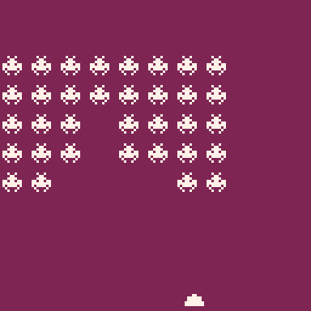

As a fan of classic arcades and programming I have always wanted to recreate some of the early simple arcade games. Space invaders is one of the oldest and most iconic games arcade games. There were many clones made for the arcade over the years and it is frequently an early project for game developers. For me Space Invaders is the essence of action games; easy to understand and difficult to master. I also really like the use of sound and how as the enemies move faster the audio increases and it ramps up the stress of the player, thus making the game more difficult. I have started coding this game a couple of times and abandoned for various reasons. Since I have been building a momentum finishing PICO-8 projects, I wanted to do a more complete version of this game.
My first attempt to code Space Invaders was in PICO-8. I worked on this for a few weeks late last year but I abandoned it when it wasn’t turning out the way I wanted. When working on this version I wanted to make it as simple as possible so I opted to use 8x8 sprites rather than the accurate space invaders sprites. As a side effect of this I think everything looks a little funky and I think this contributed to me ultimately abandoning this version. I also thought I would modernize the game a bit; I use smooth scrolling for the invaders instead of step movement. The downside of this is it makes the invaders look like they are skating at you rather than marching. Worst of all was the performance. This game didn’t have that much going on and in PICO-8 I could tell it was struggling to hit 60fps. I didn’t investigate it at the time, but I since learned why. The CLS command in PICO-8 is very expensive on the CPU. Each frame I was clearing the screen and redrawing all of the invaders. This is definitely necessary if I wanted to keep the smooth movement. The poor performance lead me to try to finish this project outside of PICO-8.
My second attempt was in JavaScript using canvas. I was interested in using this setup as a new PICO-8 style environment. My hope was to remove the CPU limitations of PICO-8 as well as switch away from Lua to a more familiar language. This all worked out and I was able to create a more complete version with better performance. I didn’t have much drive to complete it though since it carried a lot of the early decisions (8x8 sprites, smooth scrolling) I had made from the PICO-8 version. I did enjoy learning how sound synthesis works in JavaScript. I found it straight forward to make square wave style sounds in the browser. I stopped working on this version to pursue other side projects I was more interested in and I wouldn’t attempt to make a Space Invaders clone again until about two weeks ago.
My renewed interest in PICO-8 motivated me to create a more complete version of Space Invaders. This time I took inspiration from the Gameboy port and I felt that it has to be possible to make a better performing version. I started by recreating the sprites exactly how they were in the original game. I felt their iconic designs add a lot of character. Additionally, as I researched the scoring of the game I noticed that the larger enemies are worth fewer points since they are easier to hit. The biggest aha moment for me when making this version was to only clear the screen rectangles there were being updated. A side effect of this approach is that the state of the frame buffer is not centrally managed but the performance gain in PICO-8 was massive. From what I can gather the CLS command basically does a fillrect for the entire 128x128 screen. The cost of this is 2048 cycles. Comparatively if I were to only clear a 16x16 rect it would only be 4 cycles. This performance boost gave me the motivation to stick with this port and try to implement as most of the game rules in PICO-8. Another cool side effect of not clearing the entire frame buffer each frame is you can use it for game logic. So the bullet collision detection uses the color of pixels adjacent to the bullet to know if it has collided with something. There is a good reason why the shields are blue!
All in all I am very happy with this version. I feel that I have implemented a fairly close version of Space Invaders and I can move on to porting other arcade classics. That being said, this version is not perfect. One of the things I am going to try to do better in my next game project is handling state. It is tedious to create two globals for each time related object. I am starting to get more familiar with Lua and I believe there are some language features that should help make this easier. Also, I didn’t do any blast damage on the shields. So when a bullet collides it removes the square that it collides with rather than exploding a chunk of the shield off. There is also a bug where enemy bullets take two squares of shield away when player bullets only take one. Checkout the code here and play in your browser here.